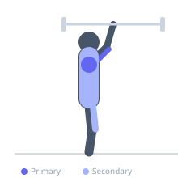
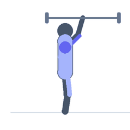

Exercise guide / Log Bar Overhead Press
Log Bar Overhead Press
The log press is a strongman overhead pressing event using a large cylindrical log bar with parallel neutral-grip handles. The neutral grip (palms facing each other) and wide diameter of the implement demand greater pectoral and shoulder activation compared to a standard barbell overhead press, and the cleaning motion required to bring the log to the shoulder before pressing adds a significant full-body power component. The log press is a primary overhead strength test in strongman competition and is an effective developer of pressing strength and stability.
Primary muscles
deltoid anterior
deltoid lateral
triceps long head
triceps lateral head
Secondary muscles
trapezius upper
pectoralis major clavicular
erector spinae
vastus lateralis
Stabilizers
transverse abdominis
infraspinatus
supraspinatus
Equipment


Starting position
- The log is on the floor or on a platform at approximately hip height. Stand in front of the log with feet shoulder-width apart. Grip the neutral-grip handles inside the log.
Setup
- If cleaning from the floor: position the log at the shins and deadlift to the lap, then roll and clean to the shoulder. If starting from a rack: position the log at chest height on safety pins.
Steps
- Step 1: Clean the log from the floor or rack to the chest. The log sits against the chest with the elbows pointing forward and downward.
- Step 2: Take a full breath and brace the core. Set the feet slightly wider than hip-width for the press.
- Step 3: Dip slightly at the knees (a push press dip), then drive upward with the legs and press the log overhead simultaneously.
- Step 4: Lock out both arms overhead with the ears between the arms. The log should be over or slightly behind the head.
- Step 5: Lower the log to the chest under control, or for maximum reps, use a slight bounce off the chest to initiate the next repetition.
Coaching cues
- Drive the log straight up from the chest — no arc forward
- Dip with the knees, not the hips
- Lock out hard and hold — show the judges
Breathing
- Take a full breath and brace before each press. Exhale forcefully at lockout.
Range of motion
- Full lockout overhead. Arms fully extended with shoulders shrugged at the top. Neutral grip (palms facing each other).
Tempo
- Strength: 1–3 reps × 5–6 sets at 85–95% 1RM. Hypertrophy: 5–8 reps × 4 sets. Competition: maximum reps in 60–75 seconds.
Common mistakes
- Pressing with the bar in front of the head rather than finishing with it stacked over the spine
- Using an excessive layback through the lower back rather than initiating the dip from the knees
- Not cleaning the log correctly to the chest, which compromises the starting position for the press
Safety
- Have collar pins or spotter arms set at chest height in case the press fails
- Build barbell overhead pressing strength before transitioning to the log — a log press requires established overhead pressing ability
Training
- strength: 1–5 reps
- hypertrophy: 5–10 reps
- strength: 4–6 sets
- hypertrophy: 3–4 sets
- Rest: {'strength': 240, 'hypertrophy': 120}